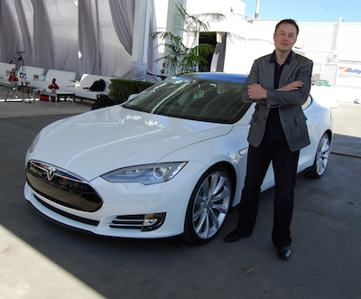

Elon Reeve Musk is a technology entrepreneur and engineer. He holds South African, Canadian, and U.S. citizenship and is the founder, CEO, and lead designer of SpaceX; co-founder, CEO, and product architect of Tesla, Inc.;co-founder and CEO of Neuralink; founder of The Boring Company; and co-founder of PayPal. In December 2016, he was ranked 21st on the Forbes list of The World's Most Powerful People. As of October 2018, he has a net worth of $22.8 billion and is listed by Forbes as the 54th-richest person in the world.
Born and raised in Pretoria, South Africa, Musk moved to Canada when he was 17 to attend Queen's University. He transferred to the University of Pennsylvania two years later, where he received an economics degree from the Wharton School and a degree in physics from the College of Arts and Sciences. He began a Ph.D. in applied physics and material sciences at Stanford University in 1995 but dropped out after two days to pursue an entrepreneurial career. He subsequently co-founded Zip2, a web software company, which was acquired by Compaq for $340 million in 1999. Musk then founded X.com, an online bank. It merged with Confinity in 2000 and later that year became PayPal, which was bought by eBay for $1.5 billion in October 2002.
In May 2002, Musk founded SpaceX, an aerospace manufacturer and space transport services company, of which he is CEO and lead designer. He helped fund Tesla, Inc., an electric vehicle and solar panel manufacturer, in 2003, and became its CEO and product architect. In 2006, he inspired the creation of SolarCity, a solar energy services company that is now a subsidiary of Tesla, and operates as its chairman. In 2015, Musk co-founded OpenAI, a nonprofit research company that aims to promote friendly artificial intelligence. In July 2016, he co-founded Neuralink, a neurotechnology company focused on developing brain–computer interfaces, and is its CEO. In December 2016, Musk founded The Boring Company, an infrastructure and tunnel-construction company.
In addition to his primary business pursuits, Musk has envisioned a high-speed transportation system known as the Hyperloop, and has proposed a vertical take-off and landing supersonic jet electric aircraft with electric fan propulsion, known as the Musk electric jet. Musk has stated that the goals of SpaceX, Tesla, and SolarCity revolve around his vision to change the world and humanity. His goals include reducing global warming through sustainable energyproduction and consumption, and reducing the risk of human extinction by establishing a human colony on Mars.
Early Life and Education
Musk was born on June 28, 1971, in Pretoria, Transvaal, South Africa,the son of Maye Musk (née Haldeman), a model and dietitian from Regina, Saskatchewan, Canada,and Errol Musk, a South African electromechanical engineer, pilot, and sailor. He has a younger brother, Kimbal (born 1972), and a younger sister, Tosca(born 1974).His maternal grandfather Dr. Joshua Haldeman was an American-born Canadian.His paternal grandmother was British, and he also has Pennsylvania Dutch ancestry. After his parents divorced in 1980, Musk lived mostly with his father in the suburbs of Pretoria, which Musk chose two years after his parents split up, but now Musk says it was a mistake. As an adult, Musk has severed relations with his father, whom he has referred to as "a terrible human being”. He has a half-sister and a half-brother.
During his childhood, Musk was an avid reader. At the age of 10, he developed an interest in computing with the Commodore VIC-20. He taught himself computer programming at the age of 10, and by the age of 12 sold the code of a BASIC-based video game he created called Blastar, to a magazine called PC and Office Technology, for approximately $500. A web version of the game is available online. His childhood reading included Isaac Asimov's Foundation series, from which he drew the lesson that "you should try to take the set of actions that are likely to prolong civilization, minimize the probability of a dark age and reduce the length of a dark age if there is one."
Musk was severely bullied throughout his childhood and was once hospitalized when a group of boys threw him down a flight of stairs and then beat him until he lost consciousness.
Musk attended Waterkloof House Preparatory School and Bryanston High Schoolbefore graduating from Pretoria Boys High School. Although Musk's father insisted that Elon go to college in Pretoria, Musk became determined to move to the United States. As he states, "I remember thinking and seeing that America is where great things are possible, more than any other country in the world.” Knowing it would be easy to get to the United States from Canada, he moved to Canada against his father's wishes in June 1989, just before his 18th birthday, after obtaining a Canadian passport through his Canadian-born mother.
Career
Earliest Times
Zip2
In 1995, Musk and his brother, Kimbal, started Zip2, a web software company, with money raised from a small group of angel investors. The company developed and marketed an Internet city guide for the newspaper publishing industry. Musk obtained contracts with The New York Times and the Chicago Tribune and persuaded the board of directors to abandon plans for a merger with CitySearch. While at Zip2, Musk wanted to become CEO; however, none of the board members would allow it. Compaq acquired Zip2 for US$307 million in cash. and US$34 million in stock options. in February 1999.Musk received US$22 million for his 7 percent share from the sale.
X.com and PayPal
In March 1999, Musk co-founded X.com, an online financial services and e-mail payment company, with US$10 million from the sale of Zip2. One year later, the company merged with Confinity, which had a money-transfer service called PayPal. The merged company focused on the PayPal service and was renamed PayPal in 2001. PayPal's early growth was driven mainly by a viral marketing campaign where new customers were recruited when they received money through the service. Musk was ousted in October 2000 from his role as CEO (although he remained on the board) due to disagreements with other company leadership, notably over his desire to move PayPal's Unix-based infrastructure to Microsoft Windows.In October 2002, PayPal was acquired by eBay for US$1.5 billion in stock, of which Musk received US$165 million. Before its sale, Musk, who was the company's largest shareholder, owned 11.7% of PayPal's shares.
In July 2017, Musk purchased the domain x.com from PayPal for an undisclosed amount, stating that it has sentimental value to him.
Later Times
SpaceX
In 2001, Musk conceptualized Mars Oasis, a project to land a miniature experimental greenhouse on Mars, containing food crops growing on Martian regolith, in an attempt to regain public interest in space exploration. In October 2001, Musk travelled to Moscow with Jim Cantrell (an aerospace supplies fixer), and Adeo Ressi (his best friend from college), to buy refurbished DneprIntercontinental ballistic missiles (ICBMs) that could send the envisioned payloads into space. The group met with companies such as NPO Lavochkin and Kosmotras; however, according to Cantrell, Musk was seen as a novice and was consequently spat on by one of the Russian chief designers, and the group returned to the United States empty-handed. In February 2002, the group returned to Russia to look for three ICBMs, bringing along Mike Griffin. Griffin had worked for the CIA's venture capital arm, In-Q-Tel, as well as NASA's Jet Propulsion Laboratory, and was just leaving Orbital Sciences, a maker of satellites and spacecraft. The group met again with Kosmotras, and were offered one rocket for US$8 million; however, this was seen by Musk as too expensive; Musk consequently stormed out of the meeting. On the flight back from Moscow, Musk realized that he could start a company that could build the affordable rockets he needed. According to early Tesla and SpaceX investor Steve Jurvetson, Musk calculated that the raw materials for building a rocket actually were only 3 percent of the sales price of a rocket at the time. It was concluded that theoretically, by applying vertical integration and the modular approach from software engineering, SpaceX could cut launch price by a factor of ten and still enjoy a 70-percent gross margin. Ultimately, Musk ended up founding SpaceX with the long-term goal of creating a true spacefaring civilization.
Musk in front of spaceX
With US$100 million of his early fortune, Musk founded Space Exploration Technologies, or SpaceX, in May 2002. Musk is chief executive officer (CEO) and chief technology officer (CTO) of the Hawthorne, California-based company. SpaceX develops and manufactures space launch vehicles with a focus on advancing the state of rocket technology. The company's first two launch vehicles are the Falcon 1 and Falcon 9 rockets (a nod to Star Wars' Millennium Falcon), and its first spacecraft is the Dragon (a nod to Puff the Magic Dragon). In seven years, SpaceX designed the family of Falcon launch vehicles and the Dragon multipurpose spacecraft. In September 2008, SpaceX's Falcon 1 rocket became the first privately funded liquid-fueled vehicle to put a satellite into Earth orbit. On May 25, 2012, the SpaceX Dragon vehicle berthed with the ISS, making history as the first commercial company to launch and berth a vehicle to the International Space Station.
Musk believed that the key to making space travel affordable is to make rockets reusable, Though most experts in the space industry did not believe that reusable rockets were possible or feasible. On December 22, 2015, SpaceX successfully landed the first stage of its Falcon rocket back at the launch pad. This was the first time in history such a feat had been achieved by an orbital rocket and is a significant step towards rocket reusability lowering the costs of access to space. This first stage recovery was replicated several times in 2016 by landing on an autonomous spaceport drone ship, an ocean-based recovery platform, and by the end of 2017, SpaceX had landed and recovered the first stage on 16 missions in a row where a landing and recovery were attempted, including all 14 attempts in 2017. 20 out of 42 first stage Falcon 9 boosters have been recovered overall since the Falcon 9 maiden flight in 2010. In the most recent full year—2017—SpaceX launched 18 successful Falcon 9 flights, more than doubling their highest previous year of 8.
On February 6, 2018, SpaceX successfully launched the Falcon Heavy, the fourth-highest capacity rocket ever built (after Saturn V, Energia and N1) and the most powerful rocket in operation as of 2018. The inaugural mission carried a Tesla Roadster belonging to Muskas a dummy payload. SpaceX is both the largest private producer of rocket engines in the world and holder of the record for the highest thrust-to-weight ratio for a rocket engine (the Merlin 1D). SpaceX has produced more than 100 operational Merlin 1D engines. Each Merlin 1D engine can vertically lift the weight of 40 average family cars. In combination, the 9 Merlin engines in the Falcon 9 first stage produce anywhere from 5.8 to 6.7 MN (1.3 to 1.5 million pounds) of thrust, depending on altitude. Musk was influenced by Isaac Asimov's Foundation seriesand views space exploration as an important step in preserving and expanding the consciousness of human life. Musk said that multiplanetary life may serve as a hedge against threats to the survival of the human species.
Musk's goal is to reduce the cost of human spaceflight by a factor of 10. In a 2011 interview, he said he hopes to send humans to Mars' surface within 10–20 years. In Ashlee Vance's biography, Musk stated that he wants to establish a Mars colony by 2040, with a population of 80,000. Musk stated that, since Mars' atmosphere lacks oxygen, all transportation would have to be electric (electric cars, electric trains, Hyperloop, electric aircraft). Musk stated in June 2016 that the first unmanned flight of the larger Mars Colonial Transporter (MCT) spacecraft is aimed for departure to the red planet in 2022, to be followed by the first manned MCT Mars flight departing in 2024. In September 2016, Musk revealed details of his architecture to explore and colonize Mars. By 2016, Musk's private trust holds 54% of SpaceX stock, equivalent to 78% of voting shares. In late 2017, SpaceX unveiled the design for its next-generation launch vehicle and spacecraft system—BFR—that would support all SpaceX launch service providercapabilities with a single set of very large vehicles: Earth-orbit, Lunar-orbit, interplanetary missions, and even intercontinental passenger transport on Earth, and totally replace the Falcon 9, Falcon Heavy and Dragon vehicles in the 2020s. The BFR will have a 9-meter (30 ft) core diameter. Significant development on the vehicles began in 2017, while the new rocket engine development began in 2012.
Tesla
Tesla, Inc. (originally Tesla Motors) was incorporated in July 2003 by Martin Eberhard and Marc Tarpenning, who financed the company until the Series A round of funding.
Both men played active roles in the company's early development prior to Elon Musk's involvement.Musk led the Series A round of investment in February 2004, joining Tesla's board of directors as its chairman. Musk took an active role within the company and oversaw Roadster product design at a detailed level, but was not deeply involved in day-to-day business operations. Following the financial crisis in 2008 and after a series of escalating conflicts in 2007, Eberhard was ousted from the firm. Musk assumed leadership of the company as CEO and product architect, positions he still holds today. Tesla Motors first built an electric sports car, the Tesla Roadster in 2008, with sales of about 2,500 vehicles to 31 countries. Tesla began delivery of its four-door Model S sedan on June 22, 2012. It unveiled its third product, the Model X, aimed at the SUV/minivan market, on February 9, 2012; however, the Model X launch was delayed until September 2015. In addition to its own cars, Tesla sells electric powertrain systems to Daimlerfor the Smart EV, Mercedes B-Class Electric Drive and Mercedes A Class, and to Toyota for the RAV4 EV. Musk was able to bring in both companies as long-term investors in Tesla.

Musk and his Tesla
Musk has favored building a sub-US$30,000 compact Tesla model and building and selling electric vehicle powertrain components so that other automakers can produce electric vehicles at affordable prices without having to develop the products in-house; this led to the Model 3 that is planned to have a base price of US$35,000. Several mainstream publications have compared him with Henry Ford for his work on advanced vehicle powertrains. In a May 2013 interview with All Things Digital, Musk said that to overcome the range limitations of electric cars, Tesla is expanding its network of supercharger stations, tripling the number on the East and West coasts of the U.S. that June, with plans for more expansion across North America, including Canada, throughout the year. As of January 29, 2016, Musk owns about 28.9 million Tesla shares, which equates to about 22% of the company.
As of 2014, Musk's annual salary is one dollar, similar to that of Steve Jobs and other CEOs; the remainder of his compensation is in the form of stock and performance-based bonuses. In 2014, Musk announced that Tesla would allow its technology patents to be used by anyone in good faith in a bid to entice automobile manufacturers to speed up development of electric cars. "The unfortunate reality is electric car programs (or programs for any vehicle that doesn't burn hydrocarbons) at the major manufacturers are small to non-existent, constituting an average of far less than 1% of their total vehicle sales," Musk said. In February 2016, Musk announced that he had acquired the Tesla.com domain name from Stu Grossman, who had owned it since 1992, and changed Tesla's homepage to that domain. In January 2018, Musk was granted an option to buy up to 20.3 million shares if Tesla's market value were to rise to $650 billion. Majority shareholder approval was pending As of 5 March 2018. The grant was also meant to end speculation about Musk's potential departure from Tesla to devote more time to his other business ventures. A report by advisory firm Glass Lewis & Co. to its clients argued against granting the options.
The New York Post described the pending stock option grant as an "astronomical deal" in pay when it reported that Tesla accepted $750 million in public funds from New York Governor Andrew Cuomo as part of the Buffalo Billion project, a plan to invest money to help the economy of the Buffalo, New York area. The money was used to build a factory and infrastructure for solar panel maker SolarCity, which Tesla acquired. As of March 2018, the plant employed "just a few hundred workers and its future remains uncertain." (The Buffalo area actually lost nearly 5,000 jobs between December 2016 and December 2017). In September 2018, Musk was charged by the U.S. Securities and Exchange Commission for a tweet claiming that funding had been secured for taking Tesla private. The lawsuit characterized the tweet as false, misleading, and damaging to investors, and sought to bar Musk from serving as CEO on publicly traded companies. Two days later, Musk reached a settlement with the SEC. As a result, Musk and Tesla were fined $20 million each, and Musk was forced to step down as Tesla chairman within 45 days while remaining Tesla's CEO. Musk also proclaimed in several interviews since that he does not regret sending the tweet that triggered the SEC investigation. According to Reuters, Musk said the tweet that cost him and the company $20 million in fines was "Worth It”. Musk also went on to tweet on October 1, 2018 a link to "O.P.P." by Naughty by Nature as a take on what had happened between him and the SEC. According to ABC News, "As recently as Oct. 4, Musk issued a sarcastic tweet, describing the agency SEC] as the “Shortseller Enrichment Commission,” despite having agreed to settlement terms a week earlier that his company, Tesla, would monitor his tweets and other communications.” Following Musk's resignation as chairman, Tesla named Robyn Denholm to replace Elon Musk as the acting chairman. This decision came after weeks of speculation on whether Tesla would nominate James Murdoch.
In January 2019, Musk traveled to China for the groundbreaking of Tesla's Shanghai Gigafactory, which is the company's first large-scale plant outside the U.S. Part of his visit to China, Musk also met the Chinese premier Li Keqiang. During their exchange, Musk confessed his love for China and wished he could visit China more often, to which the Chinese premier was quoted as saying "We can issue you a Chinese green card if that helps." The New York Post described the pending stock option grant as an "astronomical deal" in pay when it reported that Tesla accepted $750 million in public funds from New York Governor Andrew Cuomo as part of the Buffalo Billion project, a plan to invest money to help the economy of the Buffalo, New York area. The money was used to build a factory and infrastructure for solar panel maker SolarCity, which Tesla acquired. As of March 2018, the plant employed "just a few hundred workers and its future remains uncertain." (The Buffalo area actually lost nearly 5,000 jobs between December 2016 and December 2017).
In September 2018, Musk was charged by the U.S. Securities and Exchange Commission for a tweet claiming that funding had been secured for taking Tesla private. The lawsuit characterized the tweet as false, misleading, and damaging to investors, and sought to bar Musk from serving as CEO on publicly traded companies. Two days later, Musk reached a settlement with the SEC. As a result, Musk and Tesla were fined $20 million each, and Musk was forced to step down as Tesla chairman within 45 days while remaining Tesla's CEO.Musk also proclaimed in several interviews since that he does not regret sending the tweet that triggered the SEC investigation. According to Reuters, Musk said the tweet that cost him and the company $20 million in fines was "Worth It”. Musk also went on to tweet on October 1, 2018 a link to "O.P.P." by Naughty by Nature as a take on what had happened between him and the SEC. According to ABC News, "As recently as Oct. 4, Musk issued a sarcastic tweet, describing the agency [SEC] as the “Shortseller Enrichment Commission,” despite having agreed to settlement terms a week earlier that his company, Tesla, would monitor his tweets and other communications. Following Musk's resignation as chairman, Tesla named Robyn Denholm to replace Elon Musk as the acting chairman. This decision came after weeks of speculation on whether Tesla would nominate James Murdoch. In January 2019, Musk traveled to China for the groundbreaking of Tesla's Shanghai Gigafactory, which is the company's first large-scale plant outside the U.S. Part of his visit to China, Musk also met the Chinese premier Li Keqiang. During their exchange, Musk confessed his love for China and wished he could visit China more often, to which the Chinese premier was quoted as saying "We can issue you a Chinese green card if that helps.”